利用vue2+vue-router2+webpack2,一步步创建一个vue项目
新建工程目录vue_project(项目根目录)，在目录下执行npm init来创建一个package.json：
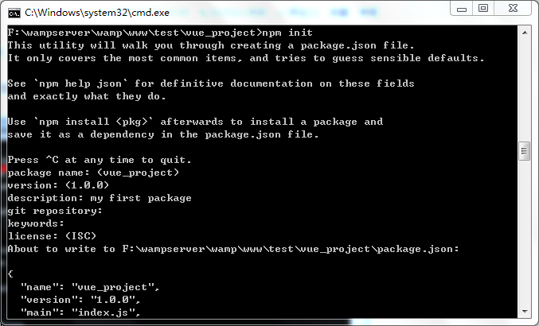在package.json中先添加以下必备模块：
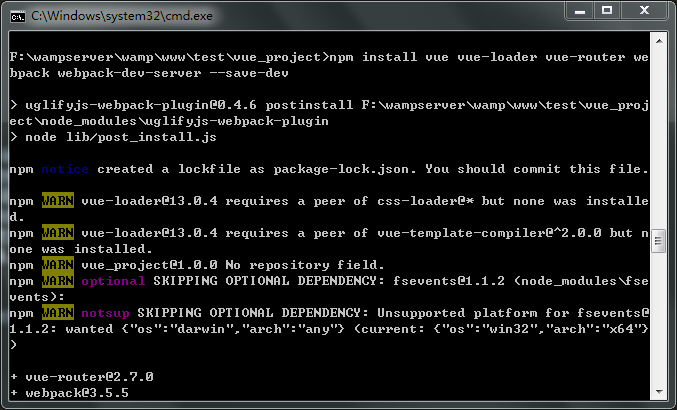打开package.json文件，可以发现项目开发所需要的模块都已被添加到devDependencies里了。
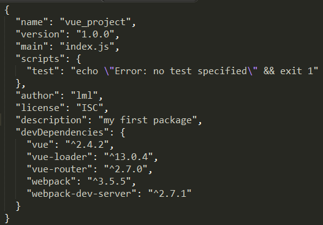在vue项目文件夹下新建一些文件，结构如下，新增的目录及文件先空着，下面的步骤会说明添加什么内容。
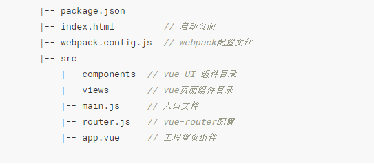webpack默认读取的是webpack.config.js,文件名不能随便修改，其中entry是必须配置的。
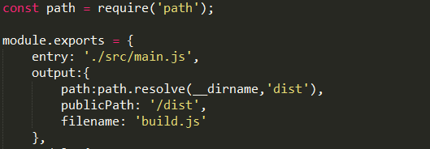（用export default会报错，如知晓原因，望勿啬指教！）
其中output的各配置项作用如下：
webpack-dev-server,只需在package.json中添加以下启动命令即可。
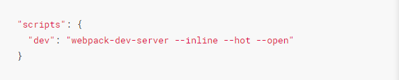各命令参数作用如下：
配置了server，习惯性的测试下上述配置是否成功，确保后续步骤在一个成功的基石上进行，执行npm install，安装完后执行npm run dev，浏览器会自动打开http://localhost:8080/，能访问（可以在index.html添加内容来确认是否启动成功）则说明上面的配置没问题。
在 views 目录下新建about.vue，不像传统的页面，没有html的结构，其实就是一个vue组件，但是承载着页面的功能，后面访问/about 的就是此文件的内容。
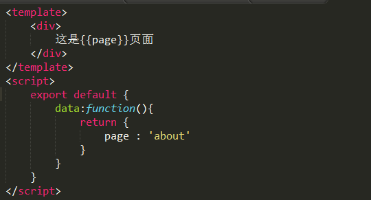在router.js文件中对路由进行配置：
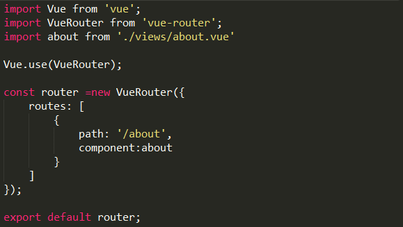导入文件和模块时最好用import,如果使用全动态 requires，现在默认会失败，只有一个表达式的依赖（例如 require(expr)）将创建一个空的 context 而不是一个完整目录的 context。
首页（index.html）只需引入打包后的 js 文件（src和webpack.config的output 配置一致），#app是整个网站的挂载点，简单点说其实整个网站就是一个 vue 的实例，#app就是实例el属性值
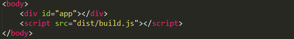接下来就是配置入口js，也就是main.js。内容如下：
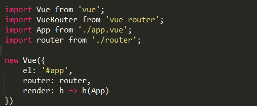在工程首页组件app.vue添加链接路由。
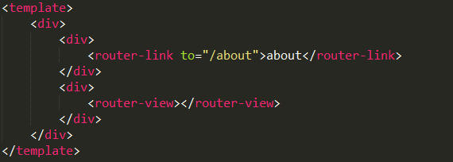配置loader加载器:
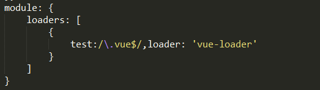如有报错，提示一些依赖未安装，那就用npm install --save-dev xxx(依赖名称)安装所缺的依赖！
此时如果在about.vue文件中添加CSS代码会提示错误Cannot find module "!!vue-style-loader!css-loader!......，这是因为CSS所依赖的loader未安装，前面vue-loader已经自动将其依赖的vue-style-loader安装好了，但是vue-style-loader依赖的css-loader并没有自动安装，需要我们自己安装。在package.json中添加，npm install --save-dev css-loader。
在about.vue下添加样式：
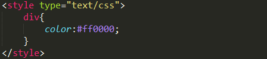运行效果如下图：
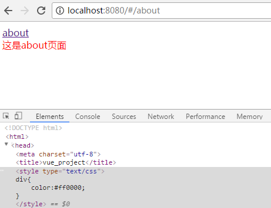只在vue文件中使用嵌入式（<style>）来添加CSS代码，是不用在webpack.config中配置loader的，可以理解为没有增加新的文件类型，背后是vue-loader利用vue-style-loader和css-loader将<style>编译成JS代码，如果想引用CSS文件的话，那意味着增加了新的文件类型（*.css），也就是说需要安装并配置文件对应的loader才能被编译成JS代码。CSS文件对应的loader为css-loader，前面已经安装，只需在webpack.config.js中增加如下配置：
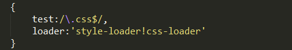在about.vue中引入css文件，注意引入文件的路径不能出错！
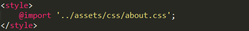通过NPM安装less，npm install less -g。(安装之后发现报错，后来在开发环境中添加less才正常运行，npm install less --save-dev)
接着安装less-loader，npm install less-loader --save-dev。
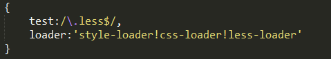在about.vue中引入less文件，注意引入文件的路径不能出错！
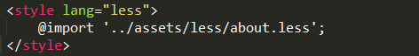JS中引用CSS文件可以像引入JS模块一样调用require，比如在about.vue中添加require('../assets/less/about.less');，那么about.css的样式就会被添加到页面中，自己可以做下测试。如果使用require引入css/less文件的话，需要安装style-loader(npm install style-loader --save-dev)。 关于webpack对样式的处理 ,导入样式require和import的区别，请点击此处。
实际项目中大多会采用less、sass、stylus中的一种预处理语言来组织整个项目的CSS，因此需要添加这些预处理语言对应的loader，各个预处理语言的loader信息如下：
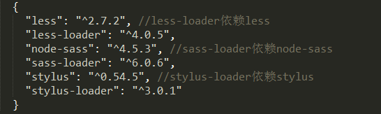同CSS，如果只在vue文件中使用，则不需要配置loader，实际项目中一般只会采用一种，下面将3中常用的一起测试一下。在views文件夹下新建style.vue组件并配置好路由，在style.vue添加测试代码如下：
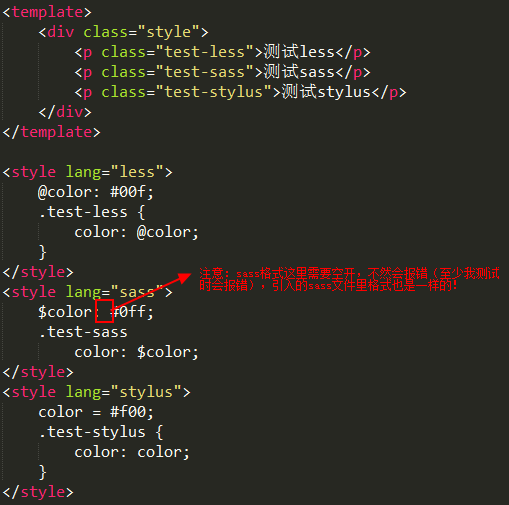运行效果如图：
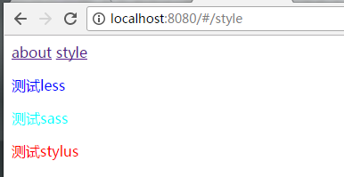如果想通过引用文件的方式来加载样式，就必须配置loader，配置如下：
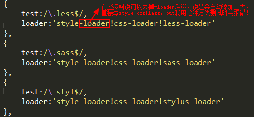将style.vue中各种语言<style>节点中的样式放进一个对应文件中，然后在style.vue中引用各个文件如下：
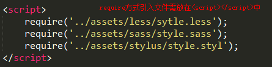项目打包发布有多种选择，比如用gulp，grunt，这里就采用webpack来打包，webpack打包只需一个命令，即webpack --progress --colors，后面参数可以不要，参数是为了让编译的输出内容带有进度（--progress）和颜色（--colors）。在package.json添加如下命令：
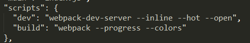然后执行npm run build,执行完命令会在项目中多了个dist的文件夹，里面只有一个build.js文件，新增的目录及文件都是在webpack.config.js中的output配置指定的。查看build.js我们会发现几个问题：
以上这些问题使用webpack插件就迎刃而解了。
什么是webpack插件？这个就类似gulp需要安装所需要的插件一样，webpack不可能做到什么事都会。虽然webpack本身就依赖各种loader，但是有些是还是loader无法完成的，这个时候就需要插件来助一臂之力了。webpack 本身内置了一些常用的插件，还可以通过 npm 安装第三方插件。
下面依次来介绍哪些插件可以解决上面的问题以及插件的使用方法。
插件的使用一般是在webpack的配置信息plugins选项中指定。比如：
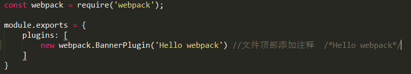压缩js用的插件是webpack.optimize.UglifyJsPlugin,uglifyjs应该比较熟悉，使用方法如下：
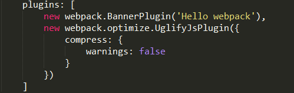warinings:false是在删除无用代码的时候，不显示警告，下面来执行的结果。
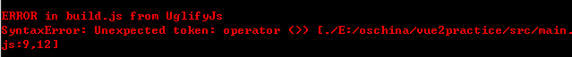虽然报错了，仍然输出了build.js，只是未压缩，上图错误是指在main.js第9行12列符号错误，也就是说不识别箭头函数，为啥运行可以？其实如果你去看运行的代码，会发现ES6的语法并未转换，只是Chrome支持这些语法，如果用import就会报错了。解决方法是增加babel-loader，将ES6语法进行转换，在package.json如下模块并安装：
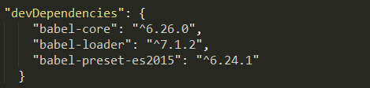接着配置webpack.config.js中的rules:
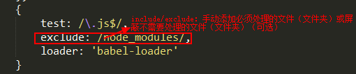然后还需要配置babel的转码规则，使用presets（预设）字段设定转码规则，这里我们需要将ES6转换成ES5，所以需要用到ES2015转码规则。另外，Babel的配置文件是.babelrc,存放在根目录下，该文件是用来配置转码规则和插件的，基本格式如下：
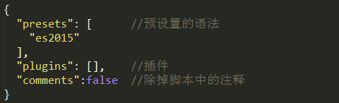也可以在package.json中配置，配置方法如下：
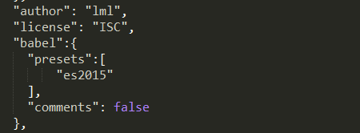配置好后再执行命令就不会报错了，压缩后的js大小由原来的520k到现在的3k(看到变成了3k，一脸懵逼，但确实可以正常运行)。
提取CSS的插件是extract-text-webpack-plugin,这个插件不是webpack自带的，所以需要手动安装，在package.json中添加：
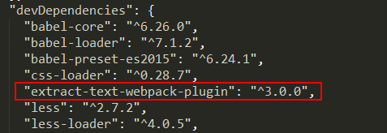在webpack.config.js中配置，如下图：
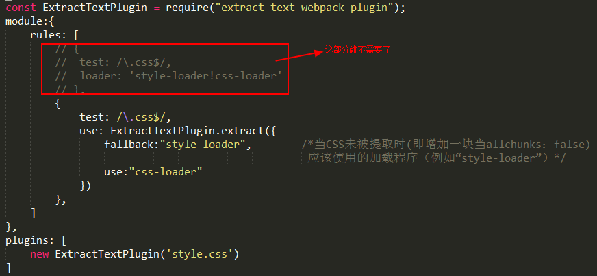在上面的配置中，样式被提取到了style.css文件，在index.html中添加引用后就生效了。启动发现vue文件中<style>里的样式并未纳入到style.css中，而是继续嵌入式在head中，这是由于vue-loader默认用的是vue-style-loader，想要将vue文件中的样式也提取到文件中，需要在webpack.config.js添加vue的loaders的配置：
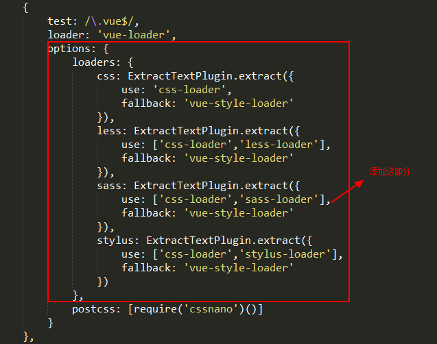现在已经将所有的样式都提取到了一个文件中，但你会发现CSS并未压缩，看来ExtractTextPlugin的职责并不包含压缩。
既然上面提到CSS并未压缩，那只能去寻找其他的插件来完成这个工作，PostCSS无疑就是最佳的选择之一，当然PostCSS并不是为压缩CSS而生的，它是一个使用JS插件来转换CSS的工具， 这些插件可以支持使用变量，混入，转换未来的CSS语法，内联图片等操作。
首先安装PostCSS，webpack使用postcss-loader而不是postcss，在package.json中添加postcss-loader并安装。
我们的首要目标是压缩CSS，既然PostCSS是依赖插件来完成特定目标的，那么我们需要先找到压缩CSS的插件，查询插件的地址为https://github.com/postcss/postcss或http://postcss.parts/，最终发现插件cssnano可以完成我们的目标。在package.json中添加cssnano并安装：
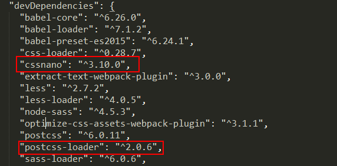然后配置webpack.config.js:
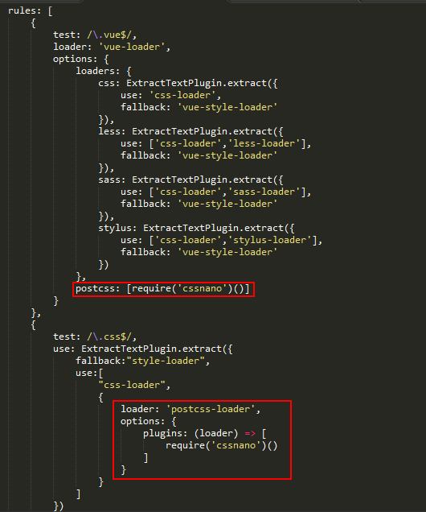上面利用cssnano完成了压缩，其实cssnano不止是完成了压缩，还优化了你的CSS代码，比如丢弃重复的样式规则、压缩选择器、合并规则等等。还有一种直接压缩已提取出来css文件的方法，就是利用optimize-css-assets-webpack-plugin插件和cssnano，首先需要安装optimize-css-assets-webpack-plugin和cssnano，接着配置如下：
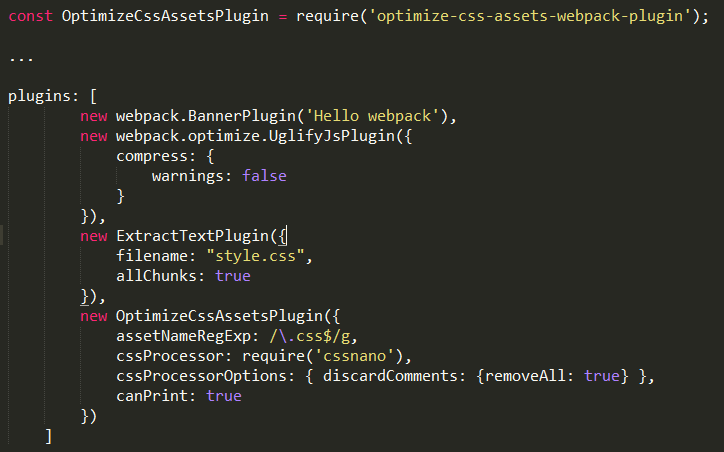postcss还有很多有趣的插件，比如autoprefixer，它是一个自动检测兼容性给各个浏览器加个内核前缀的插件，还有其他的插件就靠自己发现了。
如果是很小的图片，转成DataUrl放在JS中还是可以接受的，毕竟可以减少请求，大图肯定不适合这种方式。如果你完全不想这么做，或者只想单独把大图提出来，只需通过增加url-loader的参数即可(需要安装file-loader)。
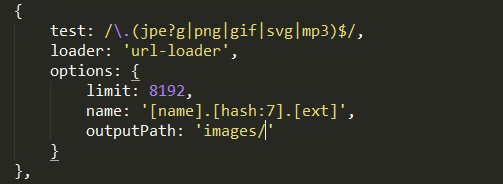这里涉及到了4个参数：limit、name、outputPath、publicPath。下面解释一下这4个参数: